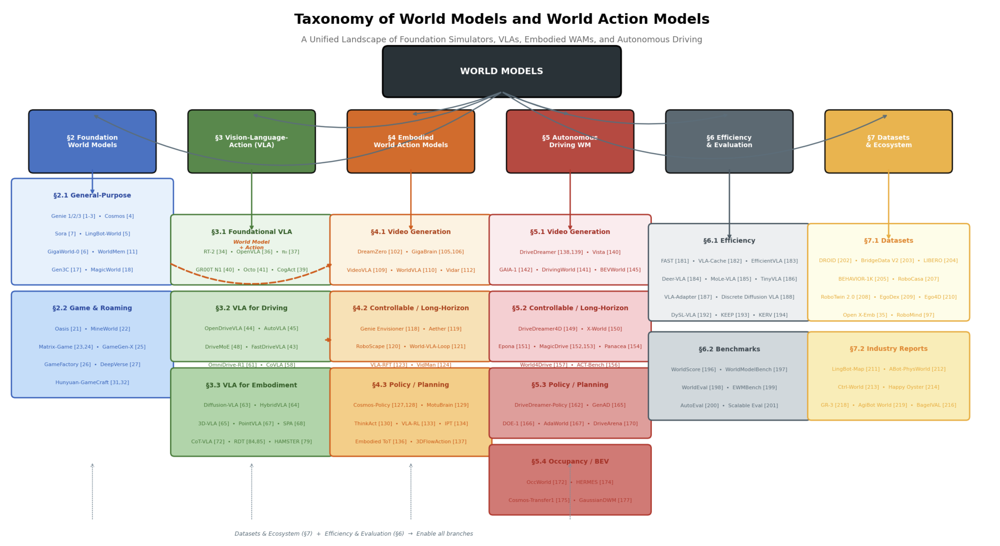
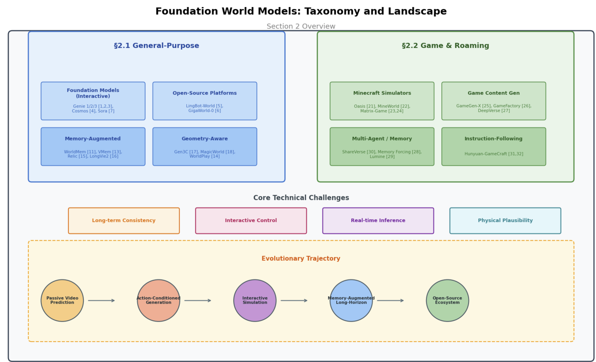
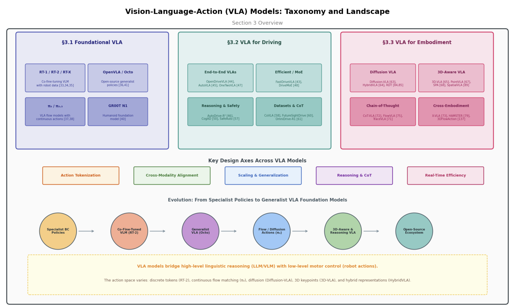
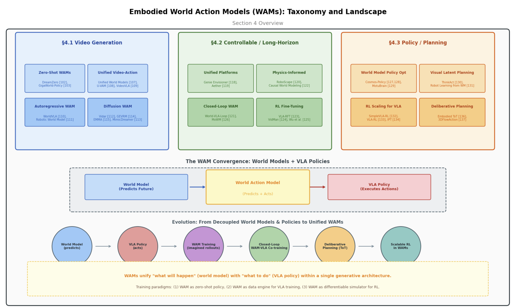
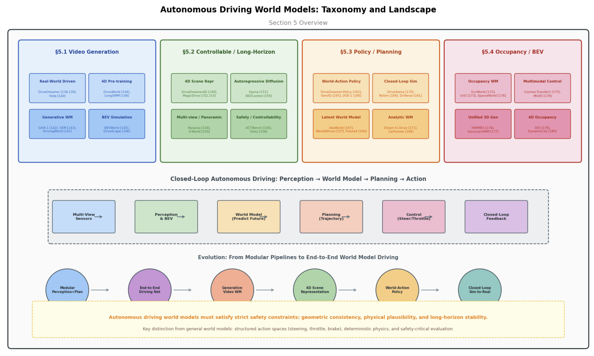
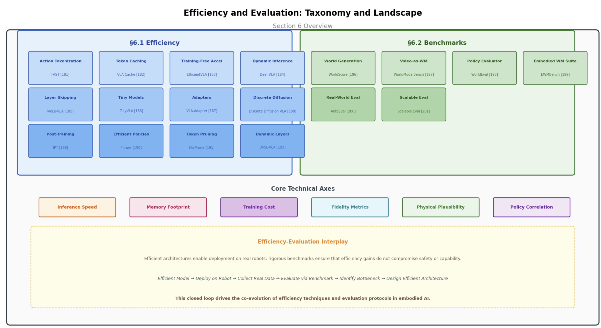
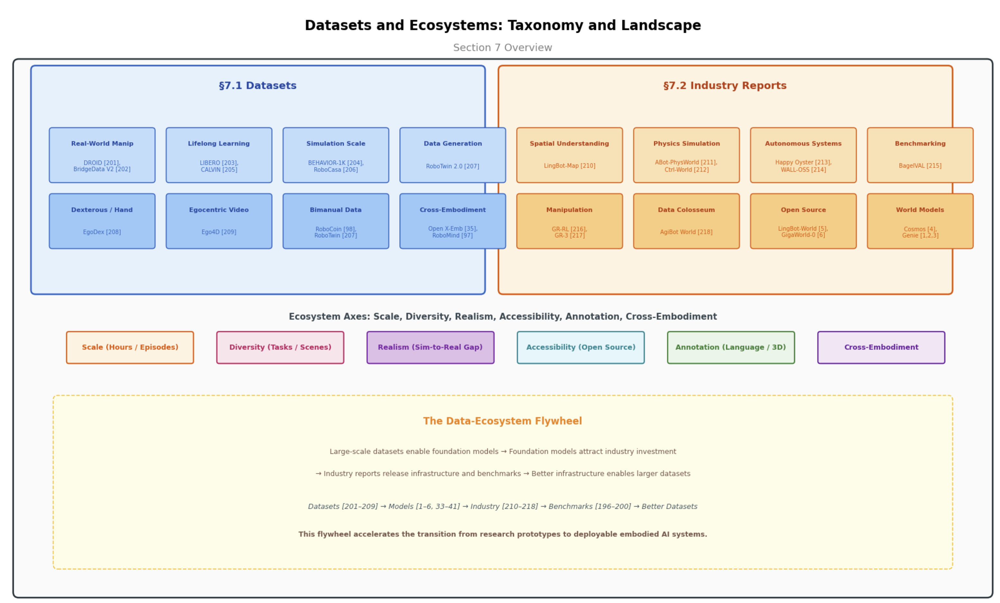

From Foundation Simulators to Embodied Action
World models—internal predictive representations that enable agents to simulate future states, anticipate consequences, and plan actions—have emerged as a foundational paradigm in embodied artificial intelligence. Originating from model-based reinforcement learning, this field has undergone a radical transformation with the advent of large-scale generative models, blurring the historical boundary between passive video prediction and interactive physical simulation. Concurrently, Vision-Language-Action (VLA) models have established a powerful framework for grounding high-level linguistic intent in low-level motor control. The natural convergence of these two threads—predictive world simulation and action-grounded multimodal reasoning—has given rise to Embodied World Action Models (WAMs), representing a new frontier in which agents learn to act by imagining their futures. However, the explosive growth of methods across robotics, autonomous driving, and interactive simulation has produced a fragmented landscape that lacks systematic unification.
This survey presents a comprehensive and structured review of the modern world model ecosystem, encompassing 200+ key papers organized into a unified taxonomy across six major pillars.
Through this organization, we illuminate the evolutionary trajectory from passive pixel predictors to active, reasoning, and action-grounded simulators. We identify critical open challenges—including physical consistency, cross-embodiment generalization, safety verification, and the sim-to-real evaluation gap—and outline future directions toward cognitive world models, autonomous data collection, and standardized open ecosystems. This survey aims to serve as a definitive reference for researchers and practitioners advancing the next generation of embodied intelligence.
Eight sections covering the full spectrum from foundation simulation to embodied action.

Evolution from recurrent world models to large-scale generative simulators and the convergence of world models with VLA into WAMs.

General-purpose interactive simulators (Genie, Cosmos, Sora) and game-specific environments (Oasis, Matrix-Game, GameGen-X).

Foundational architectures (RT-2, π₀, OpenVLA), driving-specific VLAs, and embodied manipulation policies (Diffusion-VLA, 3D-VLA, RDT).

Unified video-action pretraining (DreamZero, Unified World Models), controllable simulation (RoboScape), and policy optimization (Cosmos-Policy, ThinkAct).

Driving video generation (DriveDreamer, GAIA-1), closed-loop simulation (DriveArena, Epona), planning (GenAD, DOE-1), and occupancy/BEV (OccWorld, HERMES).

Computational acceleration (FAST, VLA-Cache, MoLe-VLA, TinyVLA) and benchmarks (WorldScore, WorldEval, AutoEval).

Large-scale robot learning corpora (DROID, BridgeData, LIBERO, BEHAVIOR-1K) and industry technical reports (LingBot, GR-3, AgiBot).
Open challenges in physical consistency, cross-embodiment generalization, safety verification, sim-to-real evaluation, and standardized open ecosystems.
If you find this survey useful for your research, please consider citing:
@article{jin2026worldmodel-wam-zenodo,
title={World Models and World Action Models (WAM): From Foundation Simulators to Embodied Action},
author={Jin, Xin},
journal={Zenodo},
year={2026},
month={May},
doi={10.5281/zenodo.20046240},
url={https://zenodo.org/records/20046240},
note={Version v1}
}
}